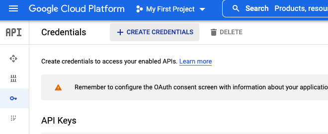

Go to Google Developer and set up an account and a first project. A tutorial on how to do this can be found here.
Once this is done we need to create the credentials for an oauth client, with the appropriate scopes. The outcome is a set of keys that we will add to our path when running our scripts, so we can authenticate our service with google.
We are looking to create an oauth client. This requires configuring the consent screen that users will see when using the application.
Next we choose the scopes we want to have available for our application. We add the basic scopes we want to have access to and then add Google Analytics as an extra scope. The configuration here allows the application to request these scopes in our python request.
We now add the google analytics scope.
Now that we have defined the scopes, we need to get the secret keys to add to our application/script.
Now we have the secrets we need to authenticate. The python script assumes a file '.secrets' to exist in the directory of the script. Create the file and insert the downloaded json. The contents of the file should look roughly like this:
{
"installed":{
"client_id": YOUR_CLIENT_ID,
"project_id": YOUR_PROJECT_ID,
"auth_uri":"https://accounts.google.com/o/oauth2/auth",
"token_uri":"https://oauth2.googleapis.com/token",
"auth_provider_x509_cert_url":"https://www.googleapis.com/oauth2/v1/certs",
"client_secret": YOUR_CLIENT_SECRETS,
"redirect_uris":["http://localhost"]
}
}